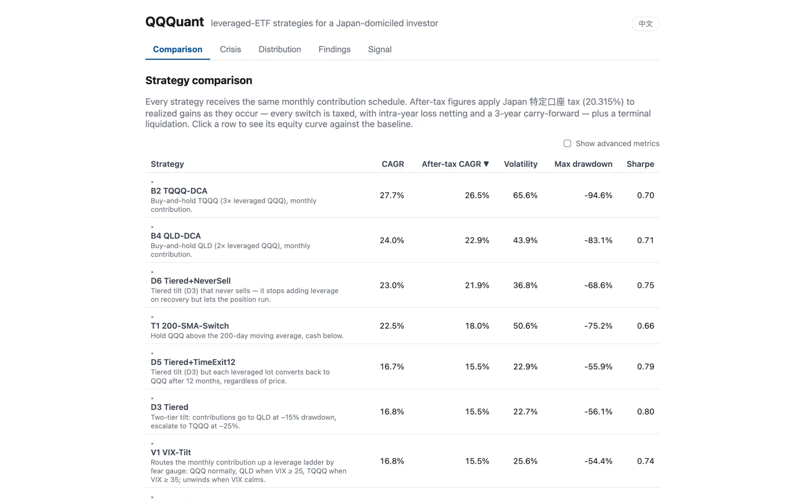
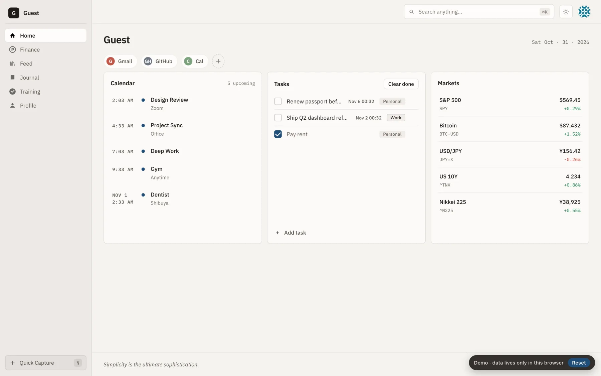

Setsushin
Data engineer in Japan. GitHub
QQQuant
Leveraged-ETF strategy backtesting for a Japan-domiciled investor. It tests whether tilting monthly contributions into QLD and TQQQ during deep QQQ drawdowns beats plain QQQ DCA after Japanese tax.
Python · dbt · DuckDB · FastAPI · React
The demo is a static snapshot.

Personal dashboard
A personal start page. Calendar, tasks, markets, portfolio, feeds and a journal sit in one place.
React · TypeScript · Cloudflare Pages · D1
The demo uses dummy data and stays in your browser.
